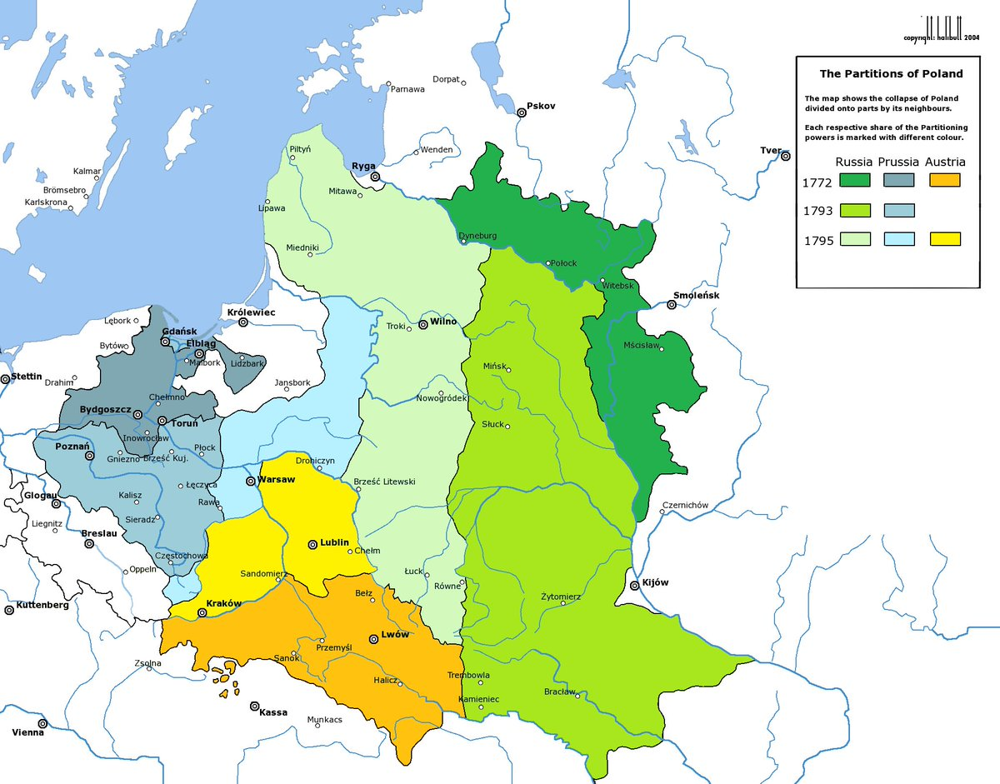

別在時間線上倒垃圾行嗎
寫的東西還不如意林的那些垃圾文章有邏輯性，蔥娘這種人要是寫論文灌水最狠了😹
用波蘭立陶宛聯邦的例子來證明所謂「民主壞，專制好」多少有點幽默，波蘭立陶宛聯邦的問題，核心是自由否決制、寡頭貴族壟斷政治，不是因為所謂的「民主」。把一個只有少數貴族享有政治權利的制度，直接偷換成現代民主，我說蔥娘玩的好一手偷換概念啊😁
舉的材料也不能說明「波蘭人渴望專制」：「封建割據時期，人民期望消滅封建割據、實現國家統一……歌頌強大的統一的國家政權。」人家說的是想要國家能統一、集權，誰說要一個專制君主了？
再提下歐盟的問題，是誰一聽到歐盟稍微要通過點一體化的法案之類的，就要跟著那些親俄的玩意喊什麼「這是布魯塞爾新自由主義大西洋主義的陰謀」，破壞歐洲的團結與統一，我不好說😁

寫的東西還不如意林的那些垃圾文章有邏輯性，蔥娘這種人要是寫論文灌水最狠了😹
用波蘭立陶宛聯邦的例子來證明所謂「民主壞，專制好」多少有點幽默，波蘭立陶宛聯邦的問題，核心是自由否決制、寡頭貴族壟斷政治，不是因為所謂的「民主」。把一個只有少數貴族享有政治權利的制度，直接偷換成現代民主，我說蔥娘玩的好一手偷換概念啊😁
舉的材料也不能說明「波蘭人渴望專制」：「封建割據時期，人民期望消滅封建割據、實現國家統一……歌頌強大的統一的國家政權。」人家說的是想要國家能統一、集權，誰說要一個專制君主了？
再提下歐盟的問題，是誰一聽到歐盟稍微要通過點一體化的法案之類的，就要跟著那些親俄的玩意喊什麼「這是布魯塞爾新自由主義大西洋主義的陰謀」，破壞歐洲的團結與統一，我不好說😁

历史证明，波兰立陶宛联邦因为贵族民主制衰亡、被分割、被灭亡。
不极端的说，哪怕是任何形式的专制和集权，都可以拯救这个可悲的国家，不知道波兰人是不是“国土诚可贵，独立价更高。若为分权故，亡国亦不抛。”呵～
甚至波兰人民都不断祈求着推翻这种分权的贵族民主制，但贵族们傲慢的不屑一顾-- https://t.co/vnC1mfFmaO
不极端的说，哪怕是任何形式的专制和集权，都可以拯救这个可悲的国家，不知道波兰人是不是“国土诚可贵，独立价更高。若为分权故，亡国亦不抛。”呵～
甚至波兰人民都不断祈求着推翻这种分权的贵族民主制，但贵族们傲慢的不屑一顾-- https://t.co/vnC1mfFmaO